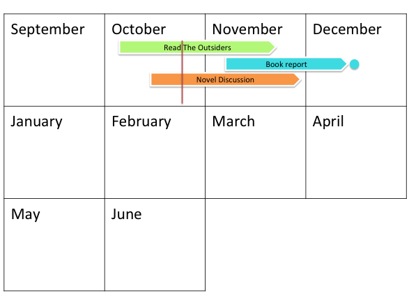

<div class="jumbotron">
	<a href="8.html"></a>
	<p class="lead">This way..</p>
	<p class="lead"><small>you can keep your sight on both long and short range goals, and are flexible to change.</small></p>
</div>